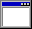

Aquí podrás crear tus propios guifos
Crear tu guifo es muy fácil, graba cualquier imagen con tu cámara y obtén guifos personalizados. Los pasos para crear tu guifo son:
- 1)Dar permisos de acceso a la cámara (sólo por el tiempo de uso)
- 2)Capturar tu momento guifo
- 3)Revisar el momento
- 4)Listo para subir y compartir!
¿Quieres comenzar a crear tu guifo ahora?
Un Chequeo Antes de Empezar


Estamos subiendo tu guifo…
Tiempo restante: 38 años algunos minutos
00:00:00:00


Capturar

Listo
Repetir Captura
Subir Guifo
Cancelar
Guifo Subido Con Éxito
Guifo creado con éxito
Copiar Enlace Guifo
Descargar Guifo
Listo